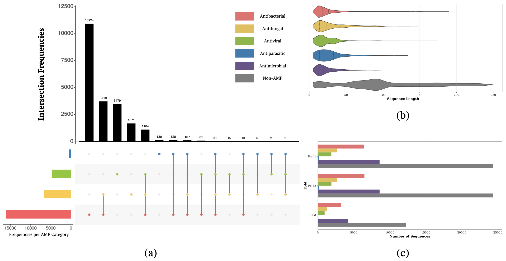
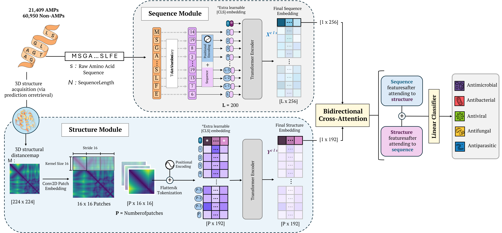

Expanded Standardized Collection for Antimicrobial Peptide Evaluation (ESCAPE) is an experimental framework for multilabel antimicrobial peptide classification. It combines a large-scale curated dataset, a benchmark for evaluating models, and a transformer-based baseline that integrates both sequence and structural information.
ESCAPE: A Standardized Benchmark for Multilabel Antimicrobial Peptide Classification
Abstract
Antimicrobial peptides have emerged as promising molecules to combat antimicrobial resistance. However, fragmented datasets, inconsistent annotations, and the lack of standardized benchmarks hinder computational approaches and slow down the discovery of new candidates. To address these challenges, we present the Expanded Standardized Collection for Antimicrobial Peptide Evaluation (ESCAPE), an experimental framework integrating over 80,000 peptides from 27 validated repositories. Our dataset separates antimicrobial peptides from negative sequences and incorporates their functional annotations into a biologically coherent multilabel hierarchy, capturing activities across antibacterial, antifungal, antiviral, and antiparasitic classes. Building on ESCAPE, we propose a transformer-based model that leverages sequence and structural information to predict multiple functional activities of peptides. Our method achieves up to a 2.56% relative average improvement in mean Average Precision over the second-best method adapted for this task, establishing a new state of the art in multilabel peptide classification. ESCAPE provides a comprehensive and reproducible evaluation framework to advance AI-driven antimicrobial peptide research. The ESCAPE dataset is available HERE and the baseline code HERE.
Overview Video
ESCAPE Database
The ESCAPE Dataset integrates over 80,000 peptide sequences from 27 validated public repositories to address critical limitations in existing AMP resources, including data fragmentation, inconsistent annotations, and limited functional coverage. It distinguishes antimicrobial peptides from negative sequences and organizes their functional annotations into a biologically meaningful multilabel hierarchy, covering antibacterial, antifungal, antiviral, and antiparasitic activities. The dataset comprises 21,409 experimentally validated AMPs and 60,950 non-AMPs filtered from unrelated sources.

The ESCAPE Dataset is available for download. You can access the complete ESCAPE Database on Harvard Dataverse.
ESCAPE Benchmark
We evaluate six representative models for antimicrobial peptide classification: AMPlify, AMP BERT, TransImbAMP, amPEPpy, AMPs Net, and PEP Net, using the multilabel framework defined by ESCAPE. Each model was modified to support multilabel classification and trained with two fold cross validation. We report final performance by averaging predictions from both folds through an ensemble strategy. Evaluation uses two standard metrics for multilabel tasks: F1 score and mean Average Precision, which are suitable for datasets with class imbalance.
The table below summarizes the key methods for antimicrobial peptide classification of the ESCAPE Benchmark, their primary architectures, GitHub repositories, and the F1-score and mean Average Precision (mAP) these methods achieve by evaluating them on the ESCAPE Dataset.
| Method | Primary Architecture | GitHub Repository | F1-score (%) | mAP (%) |
|---|---|---|---|---|
| Amps-Net | GCN | GitHub | 57.7 | 54.2 |
| TransImbAMP | Transformer-Based | GitHub | 61.9 | 64.9 |
| AMP-BERT | BERT | GitHub | 66.1 | 66.2 |
| amPEPpy | Random Forest (RF) | GitHub | 65.0 | 68.0 |
| PEP-Net | Transformer-Based | GitHub | 65.2 | 68.2 |
| AMPlify | Bi-LSTM with attention layers | GitHub | 68.9 | 71.1 |
| ESCAPE | Dual-branch transformer | GitHub | 69.5 | 72.7 |
ESCAPE Baseline
The ESCAPE Baseline is a dual-branch transformer architecture designed to classify antimicrobial peptides (AMPs) using both sequence and structural information. It processes amino acid sequences through a transformer encoder and structural representations through a second branch that encodes peptide distance matrices. These two modalities are fused using a bidirectional cross-attention mechanism, enabling the model to capture both biological context and spatial structure. This approach achieves state-of-the-art overall performance on the ESCAPE Benchmark, outperforming existing methods in both F1-score and mean Average Precision.

BibTeX
@article{escape2025,
author = {Sebastian Ojeda and Rafael Velasquez and Nicolás Aparicio and Juanita Puentes and Paula Cárdenas and Nicolás Andrade and Gabriel González and Sergio Rincón and Carolina Muñoz-Camargo and Pablo Arbeláez},
title = {ESCAPE: A Standardized Benchmark for Multilabel Antimicrobial Peptide Classification},
journal = {Preprint},
year = {2025},
url = {https://bcv-uniandes.github.io/escape-wp/}
}